You can also download a PDF copy of this lecture.
We will discuss four solutions to heteroscedasticity in linear and nonlinear regression: variance-stabilizing transformations, weighted least squares, robust standard errors, and models that do not assume homoscedasticity.
The idea is to use \(Y_i^* = g(Y_i)\) instead of \(Y_i\) as the response variable, where \(g\) is a variance-stabilizing transformation.
Example: Consider again the cancer survival time data.
library(Stat2Data)
data(CancerSurvival)
CancerSurvival$Organ <- with(CancerSurvival, reorder(Organ, Survival, mean))
p <- ggplot(CancerSurvival, aes(x = Organ, y = Survival)) +
geom_jitter(height = 0, width = 0.25) +
labs(y = "Survival Time (Days)") + theme_minimal()
plot(p)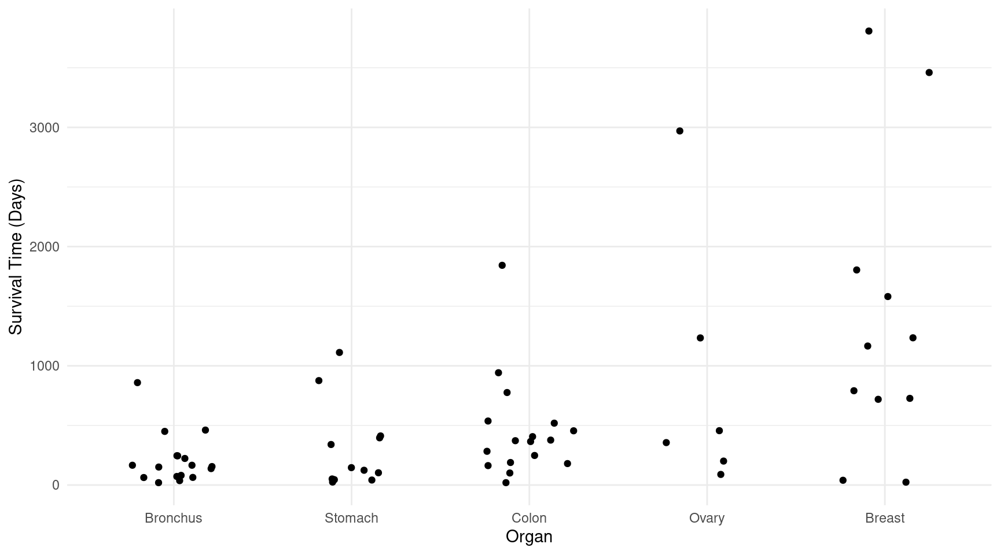
m <- lm(Survival ~ Organ, data = CancerSurvival)
CancerSurvival$yhat <- predict(m)
CancerSurvival$rest <- rstudent(m)
p <- ggplot(CancerSurvival, aes(x = yhat, y = rest, color = Organ))
p <- p + geom_point(alpha = 0.5) + theme_minimal()
p <- p + labs(x = "Predicted Value", y = "Studentized Residual")
plot(p)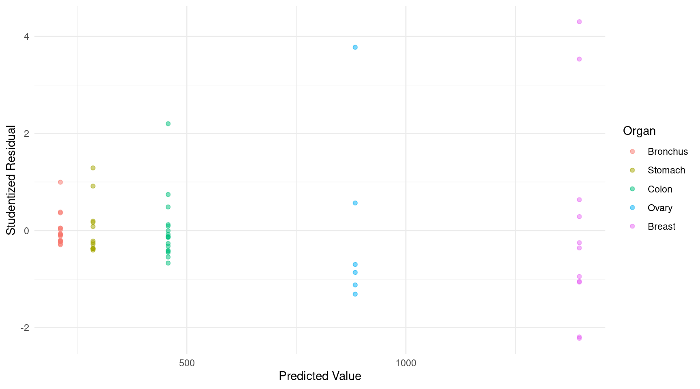 A model for log time might exhibit something closer to homoscedasticity.
p <- ggplot(CancerSurvival, aes(x = Organ, y = log(Survival))) +
geom_jitter(height = 0, width = 0.25) +
labs(y = "log(Days)") + theme_minimal()
plot(p)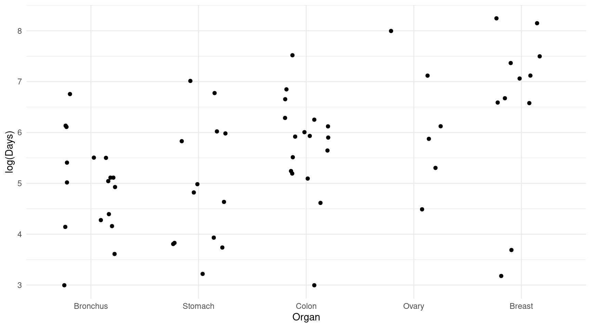
m <- lm(log(Survival) ~ Organ, data = CancerSurvival)
CancerSurvival$yhat <- predict(m)
CancerSurvival$rest <- rstudent(m)
p <- ggplot(CancerSurvival, aes(x = yhat, y = rest, color = Organ)) +
geom_point(alpha = 0.5) + theme_minimal() +
labs(x = "Predicted Value", y = "Studentized Residual")
plot(p)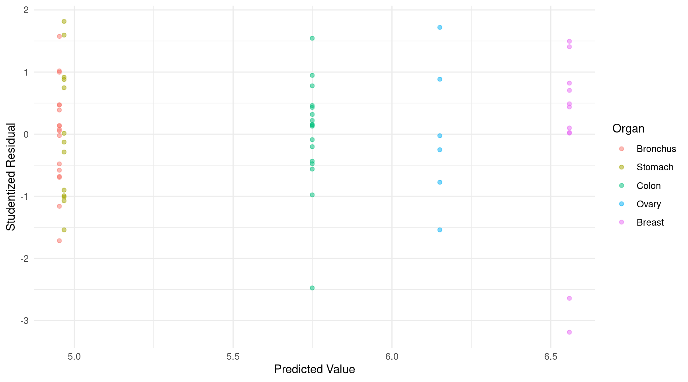 Comments on variance-stabilizing transformations.
Depending on the situation, other transformations may exhibit variance-stabilizing properties. Some common transformations are \(\sqrt{Y_i}\), \(\log(Y_i)\), \(1/\sqrt{Y_i}\) and \(1/Y_i\) for right-skewed response variables, and \(n_i \sin^{-1}\sqrt{Y_i}\) when \(Y_i\) is a proportion with a denominator of \(n_i\).
A limitation of variance stabilizing transformations is that it is often difficult (and undesirable) to to interpret the model in terms of the transformed response variable (although there are exceptions as we will later see with the log transformation in the context of accelerated failure time models for survival data).
It is important to note that for any nonlinear transformation that \(E[g(Y)] \neq g[E(Y)]\) (i.e., the expected transformed response does not necessarily equal the transformed expected response). For example, the expected log of survival time does not equal the log of the expected survival time. So we cannot obtain inferences for the expected response by applying the inverse function. For example, while we have that \(\exp[\log(Y)] = Y\), this does not imply that \(\exp\left\{E[\log(Y)]\right\} = E(Y)\).
A weighted least squares (WLS) estimator of the regression model parameters minimizes \[ \sum_{i=1}^n w_i (y_i - \hat{y}_i)^2, \] were \(w_i > 0\) is the weight for the \(i\)-th observation. So-called ordinary least squares (OLS) or unweighted least squares is a special case where all \(w_i\) = 1.
To account for heteroscedasticity, the weights should be inversely proportional to the variance of the response so that \[ w_i \propto \frac{1}{\text{Var}(Y_i)}. \] Estimation is efficient meaning that the true standard errors (which are not necessarily the reported standard errors shown by software since these are estimates and may be biased without using weights as defined above) are as small as they can be when using weighted least squares.
Example: One situation where we can anticipate heteroscedasticity and the need for weights is when the response variable is the mean of a varying number of observations. Consider the following data.
library(alr4)
head(allshoots) Day n ybar SD Type
1 0 5 10.00 0.00 0
2 6 5 11.00 0.72 0
3 9 5 10.00 0.72 0
4 19 11 13.36 1.03 0
5 27 7 14.29 0.95 0
6 30 8 14.50 1.19 0allshoots$Type <- factor(allshoots$Type, labels = c("short","long"))
head(allshoots) Day n ybar SD Type
1 0 5 10.00 0.00 short
2 6 5 11.00 0.72 short
3 9 5 10.00 0.72 short
4 19 11 13.36 1.03 short
5 27 7 14.29 0.95 short
6 30 8 14.50 1.19 shortp <- ggplot(allshoots, aes(x = Day, y = ybar, size = n, color = Type)) +
geom_point(alpha = 0.5) + theme_minimal() +
labs(x = "Days Since Dormancy",
y = "Mean Number of Stem Units per Shoot",
size = "Number of Shoots")
plot(p)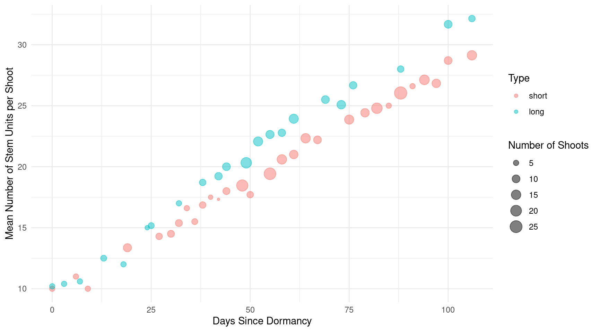 The response variable is an mean of several observations so that \[
Y_i = \frac{Z_{i1} + Z_{i2} + \cdots + Z_{in_i}}{n_i}
\] where \(Z_{ij}\) is the length of the \(j\)-th shoot that goes into the \(i\)-th average, and a total of \(n_i\) shoots go into the \(i\)-th average. If \(\text{Var}(Z_{ij}) = \sigma^2\) then \(\text{Var}(Y_i) = \sigma^2/n_i\). Thus the weights should be \[
w_i \propto \frac{1}{\sigma^2/n_i} = \frac{n_i}{\sigma^2}.
\] Since \(1/\sigma^2\) is a constant for all observations, we can define the weights as \(w_i = n_i\). The weights can be specified in lm and nls (and other functions for regression) using the weights argument.
# weighted least squares
m <- lm(ybar ~ Type + Day + Type:Day, weights = n, data = allshoots)
cbind(summary(m)$coefficients, confint(m)) Estimate Std. Error t value Pr(>|t|) 2.5 % 97.5 %
(Intercept) 9.48837 0.238615 39.764 2.126e-38 9.00861 9.96814
Typelong 0.48538 0.362496 1.339 1.869e-01 -0.24347 1.21423
Day 0.18726 0.003486 53.722 1.559e-44 0.18025 0.19427
Typelong:Day 0.03007 0.005800 5.185 4.281e-06 0.01841 0.04173trtools::contrast(m,
a = list(Type = c("short","long"), Day = 1),
b = list(Type = c("short","long"), Day = 0),
cnames = c("short shoot slope","long shoot slope")) estimate se lower upper tvalue df pvalue
short shoot slope 0.1873 0.003486 0.1802 0.1943 53.72 48 1.559e-44
long shoot slope 0.2173 0.004636 0.2080 0.2267 46.88 48 9.535e-42Example: Consider again the cancer survival time data.
p <- ggplot(CancerSurvival, aes(x = Organ, y = Survival)) +
geom_jitter(height = 0, width = 0.25) +
labs(y = "Survival Time (Days)") + theme_minimal()
plot(p)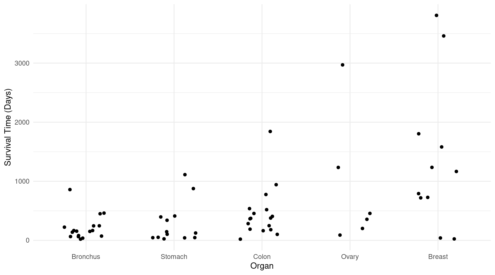
m.ols <- lm(Survival ~ Organ, data = CancerSurvival)
CancerSurvival$yhat <- predict(m.ols)
CancerSurvival$rest <- rstudent(m.ols)
p <- ggplot(CancerSurvival, aes(x = yhat, y = rest, color = Organ)) +
geom_point(alpha = 0.5) + theme_minimal() +
labs(x = "Predicted Value", y = "Studentized Residual")
plot(p)There are a couple of ways we could go with these data. One is that since we have a categorical explanatory variable with multiple observations per category, we could estimate the variance of \(Y_i\) of each organ, and then set the weights to the reciprocals of these estimated variances.
library(dplyr)
CancerSurvival %>% group_by(Organ) %>%
summarize(variance = var(Survival), weight = 1/var(Survival))# A tibble: 5 × 3
Organ variance weight
<fct> <dbl> <dbl>
1 Breast 1535038. 0.000000651
2 Bronchus 44041. 0.0000227
3 Colon 182473. 0.00000548
4 Ovary 1206875. 0.000000829
5 Stomach 119930. 0.00000834 We can use the following to compute weights and add them to the data frame.
CancerSurvival <- CancerSurvival %>%
group_by(Organ) %>% mutate(w = 1/var(Survival))
head(CancerSurvival)# A tibble: 6 × 3
# Groups: Organ [1]
Survival Organ w
<int> <fct> <dbl>
1 124 Stomach 0.00000834
2 42 Stomach 0.00000834
3 25 Stomach 0.00000834
4 45 Stomach 0.00000834
5 412 Stomach 0.00000834
6 51 Stomach 0.00000834Now let’s estimate the model using weighted least squares with these weights and inspect the residuals.
m.wls <- lm(Survival ~ Organ, weights = w, data = CancerSurvival)
CancerSurvival$yhat <- predict(m.wls)
CancerSurvival$rest <- rstudent(m.wls)
p <- ggplot(CancerSurvival, aes(x = yhat, y = rest, color = Organ)) +
geom_point(alpha = 0.5) + theme_minimal() +
labs(x = "Predicted Value", y = "Studentized Residual")
plot(p)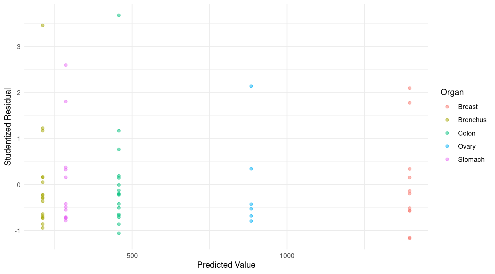 Note how this affects our inferences.
cbind(summary(m.ols)$coefficients, confint(m.ols)) Estimate Std. Error t value Pr(>|t|) 2.5 % 97.5 %
(Intercept) 211.59 162.4 1.3030 0.1976373 -113.34 536.5
OrganStomach 74.41 246.7 0.3017 0.7639784 -419.20 568.0
OrganColon 245.82 229.6 1.0704 0.2887820 -213.70 705.3
OrganOvary 672.75 317.9 2.1160 0.0385749 36.56 1308.9
OrganBreast 1184.32 259.1 4.5713 0.0000253 665.91 1702.7cbind(summary(m.wls)$coefficients, confint(m.wls)) Estimate Std. Error t value Pr(>|t|) 2.5 % 97.5 %
(Intercept) 1395.9 373.6 3.7367 0.0004228 648.4 2143.4
OrganBronchus -1184.3 377.0 -3.1413 0.0026291 -1938.7 -429.9
OrganColon -938.5 387.7 -2.4209 0.0185772 -1714.2 -162.8
OrganOvary -511.6 583.7 -0.8765 0.3843401 -1679.5 656.4
OrganStomach -1109.9 385.7 -2.8776 0.0055718 -1881.7 -338.1organs <- unique(CancerSurvival$Organ)
trtools::contrast(m.ols, a = list(Organ = organs), cnames = organs) estimate se lower upper tvalue df pvalue
Stomach 286.0 185.7 -85.57 657.6 1.540 59 1.289e-01
Bronchus 211.6 162.4 -113.34 536.5 1.303 59 1.976e-01
Colon 457.4 162.4 132.48 782.3 2.817 59 6.587e-03
Ovary 884.3 273.3 337.39 1431.3 3.235 59 1.993e-03
Breast 1395.9 201.9 991.96 1799.9 6.915 59 3.770e-09trtools::contrast(m.wls, a = list(Organ = organs), cnames = organs) estimate se lower upper tvalue df pvalue
Stomach 286.0 96.05 93.81 478.2 2.978 59 0.0042091
Bronchus 211.6 50.90 109.74 313.4 4.157 59 0.0001057
Colon 457.4 103.60 250.10 664.7 4.415 59 0.0000437
Ovary 884.3 448.49 -13.10 1781.8 1.972 59 0.0533281
Breast 1395.9 373.56 648.41 2143.4 3.737 59 0.0004228trtools::contrast(m.ols,
a = list(Organ = "Breast"),
b = list(Organ = c("Bronchus","Stomach","Colon","Ovary")),
cnames = c("Breast vs Bronchus", "Breast vs Stomach",
"Breast vs Colon","Breast vs Ovary")) estimate se lower upper tvalue df pvalue
Breast vs Bronchus 1184.3 259.1 665.9 1703 4.571 59 0.0000253
Breast vs Stomach 1109.9 274.3 561.1 1659 4.046 59 0.0001533
Breast vs Colon 938.5 259.1 420.1 1457 3.622 59 0.0006083
Breast vs Ovary 511.6 339.8 -168.4 1192 1.506 59 0.1375263trtools::contrast(m.wls,
a = list(Organ = "Breast"),
b = list(Organ = c("Bronchus","Stomach","Colon","Ovary")),
cnames = c("Breast vs Bronchus", "Breast vs Stomach",
"Breast vs Colon","Breast vs Ovary")) estimate se lower upper tvalue df pvalue
Breast vs Bronchus 1184.3 377.0 429.9 1939 3.1413 59 0.002629
Breast vs Stomach 1109.9 385.7 338.1 1882 2.8776 59 0.005572
Breast vs Colon 938.5 387.7 162.8 1714 2.4209 59 0.018577
Breast vs Ovary 511.6 583.7 -656.4 1680 0.8765 59 0.384340Here’s how you can do the comparison of one level with all others using the contrast function from the emmeans package.
library(emmeans)
contrast(emmeans(m.wls, ~ Organ), "trt.vs.ctrl", ref = "Breast",
reverse = TRUE, adjust = "none", infer = TRUE) contrast estimate SE df lower.CL upper.CL t.ratio p.value
Breast - Bronchus 1184 377 59 430 1939 3.141 0.0026
Breast - Colon 938 388 59 163 1714 2.421 0.0186
Breast - Ovary 512 584 59 -656 1680 0.876 0.3843
Breast - Stomach 1110 386 59 338 1882 2.878 0.0056
Confidence level used: 0.95 Another approach is to assume that the variance of the response variable is some function of its expected response, and thus the weights are a function of the expected response. With right-skewed response variables one common functional relationship is that \[
\text{Var}(Y_i) \propto E(Y_i),
\] or, more generally, \[
\text{Var}(Y_i) \propto E(Y_i)^p,
\] where \(p\) is some power (usually \(p \ge 1\)). So the weights would then be \[
w_i \propto \frac{1}{E(Y_i)^p}.
\] We do not know \(E(Y_i)\), but \(\hat{y}_i\) is an estimate of \(E(Y_i)\). Since \(\hat{y}_i\) does not depend on the weights for the model for the CancerSurvival data we can use the estimates from ordinary least squares to obtain weights of \(w_i = 1/\hat{y}_i^p\).
m.ols <- lm(Survival ~ Organ, data = CancerSurvival)
CancerSurvival$w <- 1/predict(m.ols)
m.wls <- lm(Survival ~ Organ, data = CancerSurvival, weights = w)
CancerSurvival$yhat <- predict(m.wls)
CancerSurvival$rest <- rstudent(m.wls)
p <- ggplot(CancerSurvival, aes(x = yhat, y = rest, color = Organ)) +
geom_point(alpha = 0.5) + theme_minimal() +
labs(x = "Predicted Value", y = "Studentized Residual")
plot(p)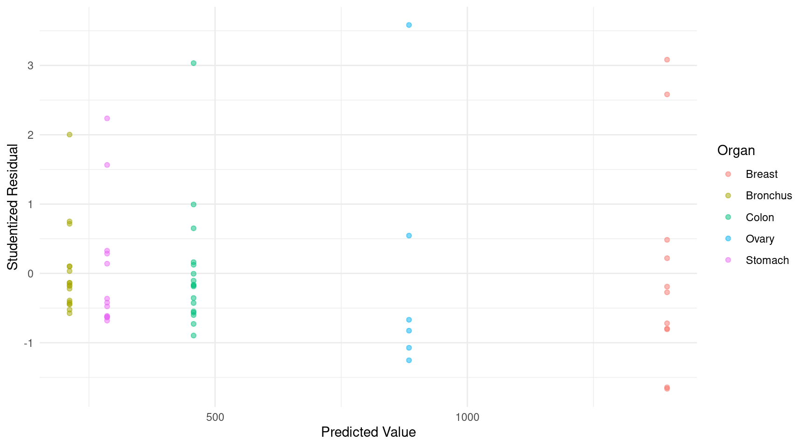 Maybe we could do better. Let’s try \(p\) = 2 — i.e., \(\text{Var}(Y_i) \propto E(Y_i)^2\).
m.ols <- lm(Survival ~ Organ, data = CancerSurvival)
CancerSurvival$w <- 1/predict(m.ols)^2
m.wls <- lm(Survival ~ Organ, data = CancerSurvival, weights = w)
CancerSurvival$yhat <- predict(m.wls)
CancerSurvival$rest <- rstudent(m.wls)
p <- ggplot(CancerSurvival, aes(x = yhat, y = rest, color = Organ)) +
geom_point(alpha = 0.5) + theme_minimal() +
labs(x = "Predicted Value", y = "Studentized Residual")
plot(p)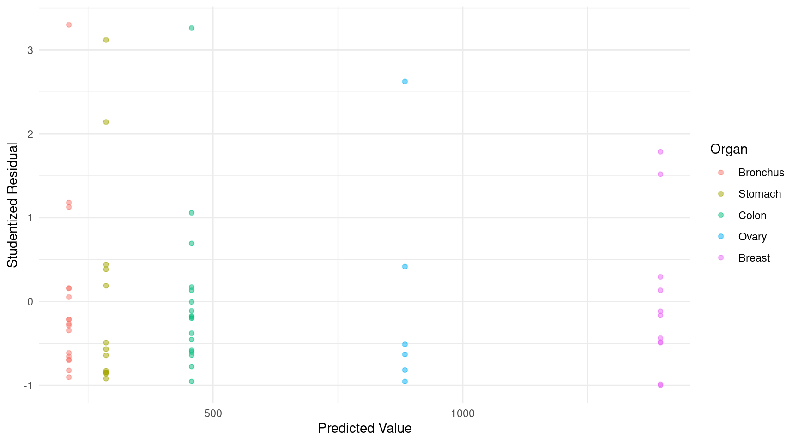 Example: Consider again following data from a study on the effects of fuel reduction on biomass.
library(trtools) # for biomass data
m <- lm(suitable ~ -1 + treatment:total, data = biomass)
summary(m)$coefficients Estimate Std. Error t value Pr(>|t|)
treatmentn:total 0.1056 0.04183 2.524 1.31e-02
treatmenty:total 0.1319 0.01121 11.773 7.61e-21d <- expand.grid(treatment = c("n","y"), total = seq(0, 2767, length = 10))
d$yhat <- predict(m, newdata = d)
p <- ggplot(biomass, aes(x = total, y = suitable, color = treatment)) +
geom_point() + geom_line(aes(y = yhat), data = d) + theme_minimal() +
labs(x = "Total Biomass (kg/ha)",
y = "Suitable Biomass (kg/ha)",
color = "Treatment")
plot(p)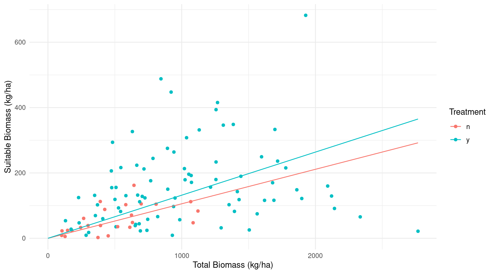
biomass$yhat <- predict(m)
biomass$rest <- rstudent(m)
p <- ggplot(biomass, aes(x = yhat, y = rest, color = treatment)) +
geom_point() + theme_minimal() +
labs(x = "Predicted Value",
y = "Studentized Residual",
color = "Treatment")
plot(p)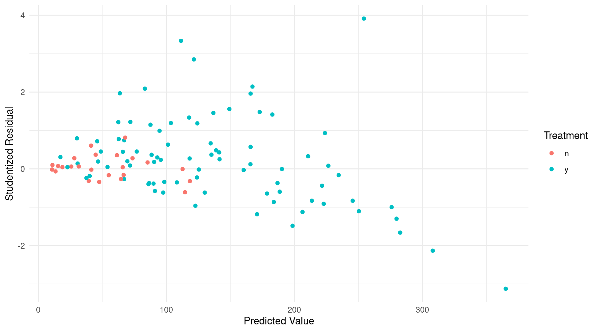 Here we might also assume that \(\text{Var}(Y_i) \propto E(Y_i)^p\), with weights of \(w_i = 1/\hat{y}_i\). But here things are a bit more complicated for this model: the \(w_i\) depend on the \(\hat{y}_i\), the \(\hat{y}_i\) depend on the \(w_i\). In the model for the CancerSurvival data this was not an issue because there the estimates of the model parameters, and thus \(\hat{y}_i\), did not depend on the weights so we could use ordinary least squares where all \(w_i\) = 1 to get the \(\hat{y}_i\). But that is not true for this model. But we can solve this problem using iteratively weighted least squares.